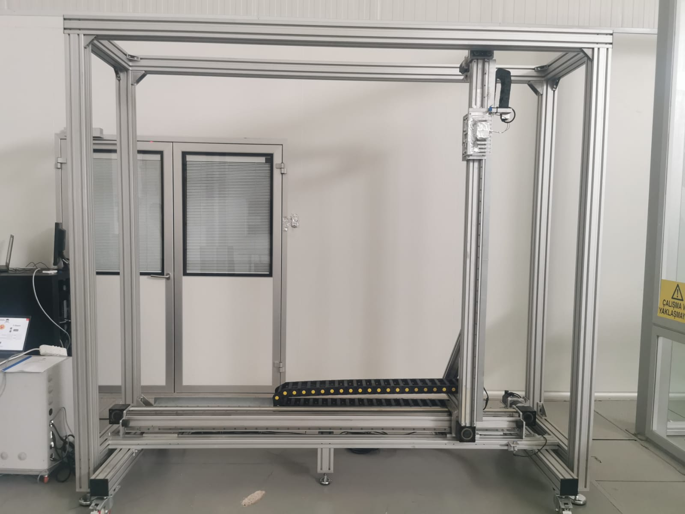
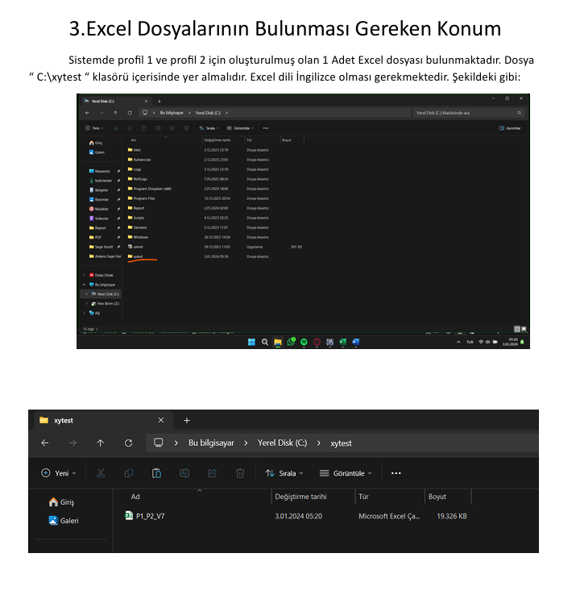
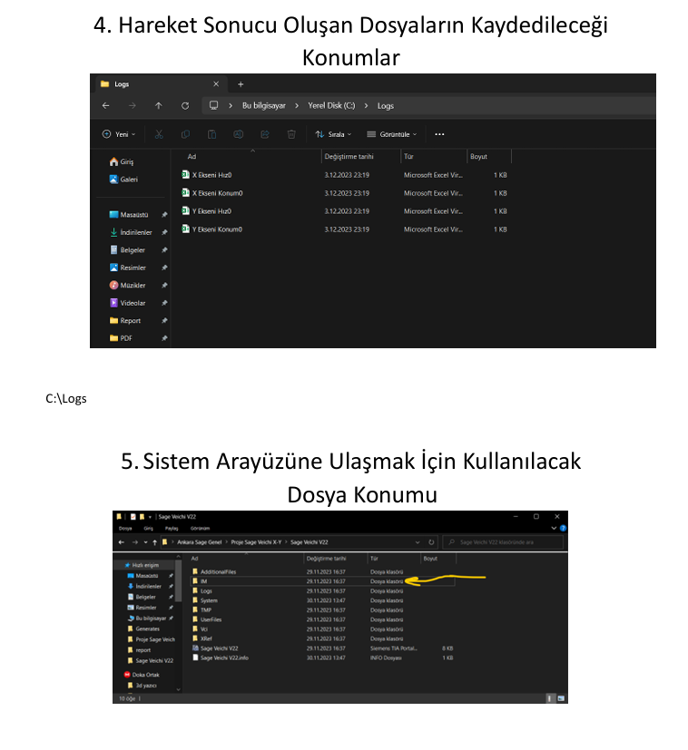
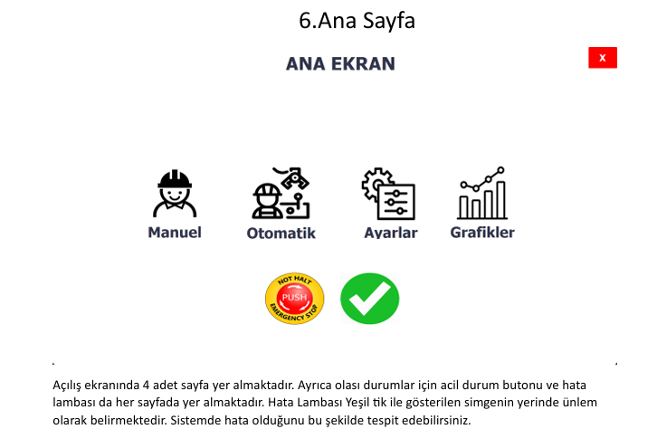
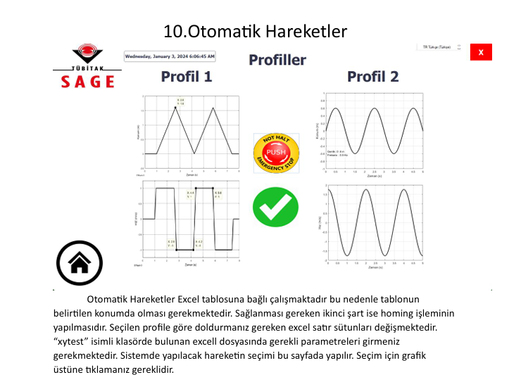
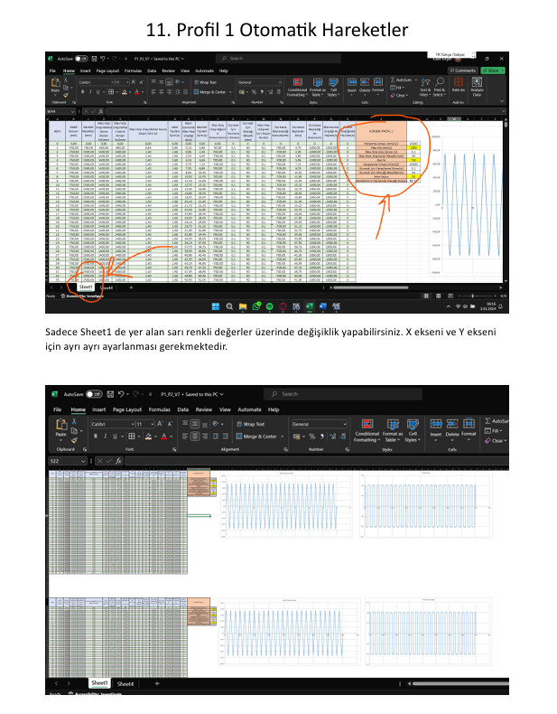
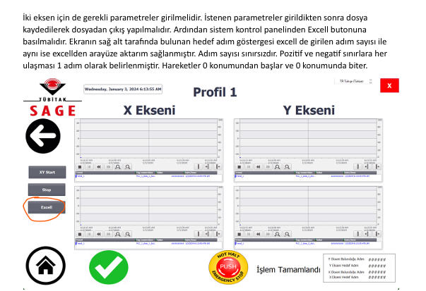

Excel entegratli WinCC SCADA sistemi ile servo motor destekli çift eksen hareket kontrolü; güvenlik sınırlarıyla seeker başlık testleri için hedef hareket sistemi. Güvenlik sınırları, acil durdurma ve SIL 2 sertifikalı güvenlik devreleri.
Seeker başlık testleri için çift eksen servo motor kontrolü kullanan hareketli hedef sistemi geliştirdim. Excel uyumlu hareket profilleri oluşturarak WinCC SCADA sistemiyle bağladım. Güvenlik sınırları ve acil durdurma ile operatör güvenliğini sağladım. SIL 2 sertifikalı güvenlik devreleri ile sistem korumasını tesis ettim.
Excel entegratli hareket profilleri ile seeker başlık test gereksinimlerine uyarlanmış yüksek hassasiyetli çift eksen servo kontrol.
WinCC SCADA üzerinden sistem durumu, konum geri besleme ve tüm operasyonların gerçek zamanlı izleme ve kayıt imkânı.
Test ortamında operatör güvenliğini sağlayan SIL 2 sertifikalı güvenlik devreleri, acil durdurma ve güvenlik sınırları.
Test planlarının Excel'den doğrudan yüklenebilmesi ile hızlı ve kolay test senaryosu oluşturma ve yönetme imkânı.







Bu CV'deki tüm projeler Doka Mühendislik'in izniyle paylaşılmıştır. Gizlilik anlaşmalarına saygı göstermek amacıyla tescilli bilgiler, müşteri adları ve hassas teknik ayrıntılar genelleştirilmiştir.